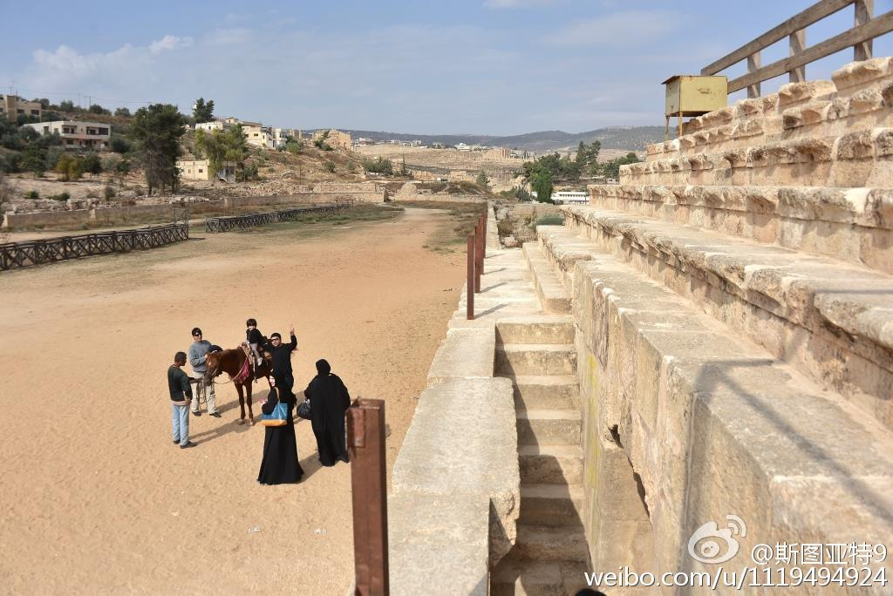

约旦的罗马古城杰拉什遗址，是个很被低估的景点。我们参观过不少罗马古城遗址，至少有将近十个，杰拉什算保存最完整了。其中也有不少别家不常见的亮点，比如圆形的广场（图2，3），跑马场（4）。此外还有保存很完整的两个剧场（5, 6)，喷水池（7），阿尔忒弥斯神庙（8）。 
阿里巴巴一个季度给员工发5亿美元的股票奖励（其中只有2亿发给研发部门？）。而Google一个季度给员工发了14.3亿。而Google的员工数将近阿里巴巴的两倍。也就是说阿里巴巴平均每个员工拿的股票超过Google员工的一半。阿里的员工们，你们觉得是这样吗？
阿里巴巴上季度的财报依然被蚂蚁金服搞得眼花缭乱： 网页链接 GAAP利润包括蚂蚁金服的投资收入没法看，Non-GAAP利润又包括了员工股票奖励过于高估。如果从GAAP利润上仅去除蚂蚁金服的180亿的话，大概是这个季度47亿人民币，按年增长60%。如果你相信的话还是蛮不错的。